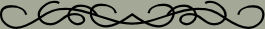

The Grand Finale
Before I go on and finish up my lesson, I wanted to thank the people who run the Juelle Web Design Course for the opportunity to take this course. Taking this course reminded me to pay more attention to the little things that make the difference between a so-so web page and a polished page. Over the past six weeks or so, I've created twenty complete web designs (and a couple more that haven't been used yet!) with all the little goodies that make a page complete from buttons and bars to background and layout. I've also used some techniques that I've never bothered with before like the java applet on this page. If you haven't already, take a look through the rest of the pages of my portfolio.
If you want to take the course yourself. (And to comply with one of the parameters for my final as well. Two birds with one stone, don't you know?) Here is a banner on which you can click to go to the home page for the Juelle Web Design Course. The link will open in a new page, so you can continue looking at my pages.
It has taken me a long, long time to finish this lesson, the last one in the course. For some reason, I have had a terrible time coming up with anything I like for more than a few minutes or the half an hour or so it takes to create the basic graphics and get the first page laid out.
Finally on Thursday, April 13th, we had a rain shower and I saw the beatiful double rainbow in the picture above. Of course I grabbed my camera, and it got me to thinking about all of the pictures I've taken in and around Port Jervis over the past three years since I moved back here from Redmond. I decided to make my little mini website about the beauty of nature using my own photos.
I chose a fairly neutral background for these pages so the beauties of nature will take center stage. If you follow through the pages, you'll get to see several particularly beautiful scenes that were taken in and near the city of Port Jervis, New York where I live. I hope you enjoy the tour. Oh, and just in case you are interested, the tile for the background was made from the picture on this page.
You can navigate through the next four pages using the buttons below, or you can click on one of the seasons on the ring to go directly to the page for that season.
